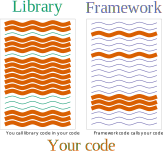
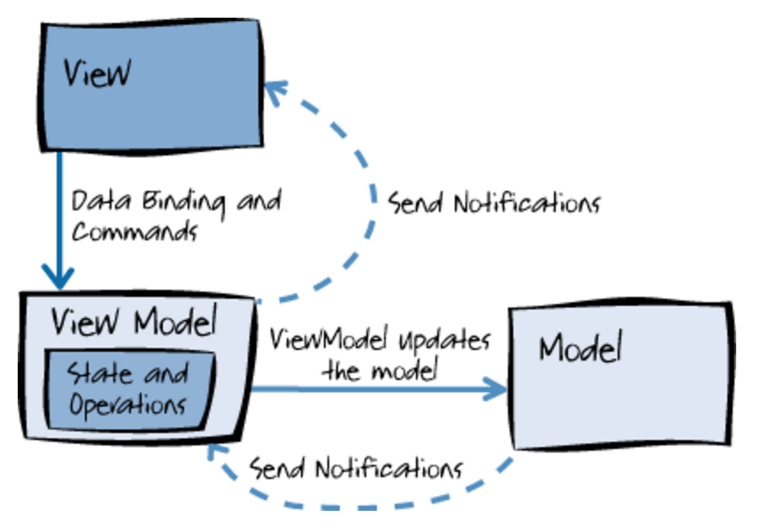

Library vs. framework: you call library code in your code, framework code calls your code.

Components: components are reusable content, e.g., a page or part of a page.

Frameworks have a Model, a View, and a Controller. The Model contains the data, the view defines what is displayed, and the Controller implements the logic that controls how the data is used in the View. This is referred to as a Model, View, ViewModel (MVVM), or MV* or MVWhatever model.